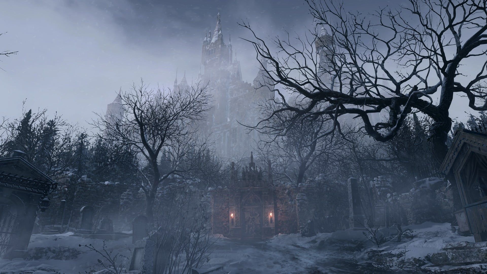

Official Site Links
Of Previous Games
Ethan Winters
The Resilient Protagonist: Ethan Winters in Resident Evil Village
Resident Evil Village, the highly anticipated sequel in the renowned horror video game franchise, introduces players to a resilient protagonist named Ethan Winters. Developed by Capcom, Ethan Winters takes center stage once again, following his harrowing experience in Resident Evil 7: Biohazard. In this article, we delve into the compelling character of Ethan Winters, his growth, and his unwavering determination in facing the twisted horrors that await him in this haunting village.
A Man on a Desperate Mission:
Ethan Winters is an ordinary man thrust into extraordinary circumstances. In Resident Evil Village, Ethan's relentless pursuit to find his kidnapped daughter becomes the driving force behind his journey into the nightmarish European village. Despite being an average person caught up in a horrifying situation, Ethan's love for his family, coupled with an unyielding determination to rescue his daughter, transforms him into a formidable force against the terrifying threats that lay in his path.
A Relatable and Resilient Hero:
What sets Ethan Winters apart from other typical video game protagonists is his relatability. Unlike the superhuman characters often found in the genre, Ethan showcases vulnerability, fear, and an understandable sense of confusion as he navigates the horrors of Resident Evil Village. Players can easily empathize with his quest, making the experience all the more real and emotionally charged.
Adapting to Survive:
Throughout Resident Evil Village, Ethan Winters undergoes tremendous character growth and development. As he encounters unimaginable terrors and faces insurmountable odds, he progressively becomes stronger, both mentally and physically. Players will witness Ethan's transformation from a helpless victim to a resourceful survivor, adapting to the treacherous environment and utilizing his surroundings to his advantage. This character evolution is not only captivating but also serves as a testament to the human spirit in the face of unimaginable horrors.
A Hero We Root For:
Ethan Winters' unwavering determination and the sacrifices he makes for his loved ones cement him as a protagonist worth rooting for. As he battles against formidable adversaries and unravels the dark secrets of the village, players will find themselves invested in his journey, cheering him on every step of the way. Ethan's courage and resilience inspire players to face their fears head-on, reinforcing the universal theme of fighting for what is most important to us.
Conclusion:
Ethan Winters stands tall as a relatable and admirable protagonist in Resident Evil Village. Capcom's masterful storytelling ensures that players become emotionally invested in his journey of survival and redemption. Ethan's remarkable resilience, both in the face of supernatural horrors and his own personal demons, elevates him from an ordinary man to an extraordinary hero. As players navigate the terrifying world of Resident Evil Village alongside Ethan, they will find themselves drawn to his unwavering spirit and rooting for his success.
Resident Evil Village
A Hauntingly Terrific Sequel to the Franchise
Resident Evil Village, the ninth installment in the long-standing horror video game franchise, is an exceptional addition that continues to captivate fans with its spine-tingling storyline, exhilarating gameplay, and breathtakingly detailed graphics. Developed and published by Capcom, Resident Evil Village builds upon the success of its predecessor, Resident Evil 7: Biohazard, offering players a terrifying survival horror experience filled with mystery, intense combat, and a twisted narrative. In this article, we delve into the unique aspects that make Resident Evil Village a must-play for both series veterans and newcomers alike.
Setting:
The game is set in a mysterious European village nestled in the heart of a dark and foreboding landscape. The atmosphere is richly immersive, with stunning visuals, eerie sound design, and a pervasive sense of dread that lingers throughout the gameplay. From desolate graveyards to grand castles, the village is replete with dilapidated structures and gloomy interiors, creating an environment that amplifies the horror experience.
Engrossing Storyline:
Resident Evil Village presents a riveting narrative that follows protagonist Ethan Winters as he searches for his kidnapped daughter in the village. The story takes unexpected twists and turns, introducing a cast of intriguing characters, each with their own secrets and motives. Fans of the franchise will be thrilled to see the return of series stalwarts such as Chris Redfield, while newcomers can easily jump into the narrative without prior knowledge of the series.
Gameplay:
Continuing the first-person perspective introduced in Resident Evil 7, the gameplay in Resident Evil Village focuses on exploration, puzzle-solving, and combat. Players will encounter grotesque monsters, cunning enemies, and challenging bosses, all of which require strategic thinking and resource management. The addition of a merchant, known as 'The Duke,' offers players the opportunity to upgrade weapons, purchase supplies, and delve deeper into the game's intricate lore.
Horror and Thrills:
Resident Evil Village expertly blends various horror elements, including psychological horror, creature horror, and jump scares. The game showcases unsettling encounters with supernatural beings, disfigured creatures, and twisted human foes. The developers skillfully use lighting, sound, and environmental design to heighten the suspense and keep players on the edge of their seats. The horror moments are balanced with occasional moments of respite, allowing players to catch their breath before being thrust back into the adrenaline-fueled action.
Conclusion:
Resident Evil Village is a masterclass in survival horror gaming, successfully delivering a hauntingly immersive experience that will leave players craving more. With its gripping storyline, nail-biting gameplay, and stunning graphics, Capcom has once again proven their expertise in creating deeply unsettling yet captivating gaming experiences. Whether you're a long-time fan of the Resident Evil franchise or a newcomer exploring the horrors for the first time, Resident Evil Village is an absolute must-play for any avid gamer seeking a thrilling and unforgettable journey into the darkness of survival horror.